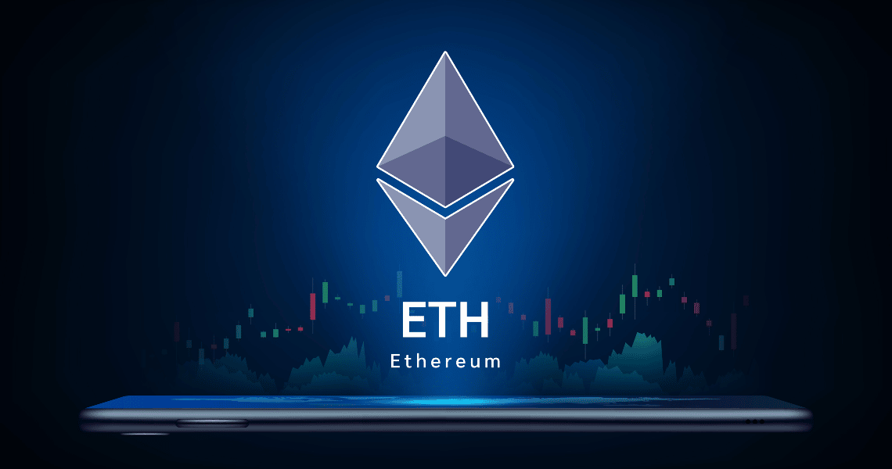
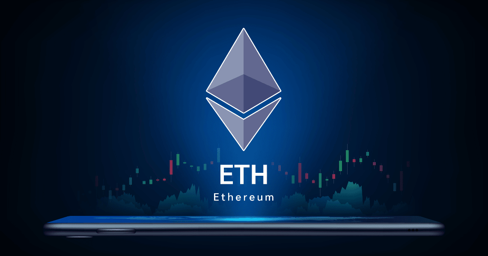

Ethereum: como funciona a segunda
criptomoeda mais famosa do mundo?
Ethereum é uma plataforma blockchain para criação de aplicativos descentralizados
e transferência de ativos digitais. A ether é a sua criptomoeda. Em geral, são
usados como sinônimos.

O que é uma criptomoeda?
Criptomoeda é o nome genérico para moedas digitais descentralizadas. Em outras palavras: elas são moedas digitais porque, diferentemente do real, do dólar e de outras moedas que podem ser tocadas, elas só existem na internet. Ou seja, você sabe que elas são verdadeiras, mas não consegue pegá-las com as mãos – ou guardá-las na carteira, no cofre ou embaixo do colchão.
Elas também são descentralizadas porque, ao contrário das moedas oficiais dos países, não há um órgão ou governo por trás delas que controle ou intermedeie as emissões e operações com as moedas. Os próprios usuários são responsáveis por esse controle.
Além disso, as criptomoedas são criadas em uma rede blockchain a partir de sistemas avançados de criptografia que protegem as transações, suas informações e os dados de quem transaciona.
Siga-nos no instagram: @House_nft